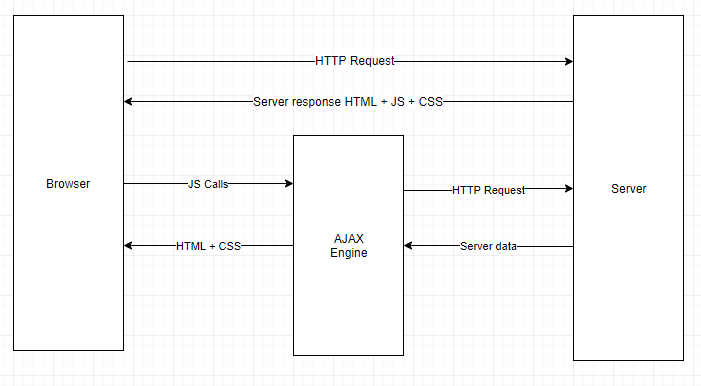

<div class="row">
    <div class="col-lg-12 col-md-12">
        <div class="card">
            <h2 class="title text-center">Preguntas</h2>
            <ul>
                <li>Explica y elabora un diagrama sobre cómo funciona AJAX con jQuery.<br>
                    </img></li><br>
                <li>¿Qué alternativas a jQuery existen?<br>
                    <ul>
                        <li>Ext JS</li>
                        <li>Zepto</li>
                        <li>Qwery</li>
                        <li>Mootools</li>
                        <li>XUI</li>
                        <li>Sizzle</li>
                </li><br>
            </ul>
        </div>
    </div>
</div>
</div>

</body>
<!--   Core JS Files   -->
<script src="../resources/js/jquery-3.2.1.min.js" type="text/javascript"></script>
<script src="../resources/js/bootstrap.min.js" type="text/javascript"></script>
<script src="../resources/js/material.min.js" type="text/javascript"></script>
<!--  Charts Plugin -->
<script src="../resources/js/chartist.min.js"></script>
<!--  Dynamic Elements plugin -->
<script src="../resources/js/arrive.min.js"></script>
<!--  PerfectScrollbar Library -->
<script src="../resources/js/perfect-scrollbar.jquery.min.js"></script>
<!--  Notifications Plugin    -->
<script src="../resources/js/bootstrap-notify.js"></script>
<!--  Google Maps Plugin    -->
<script type="text/javascript" src="https://maps.googleapis.com/maps/api/js?key=YOUR_KEY_HERE"></script>
<!-- Material Dashboard javascript methods -->
<script src="../resources/js/material-dashboard.js?v=1.2.0"></script>
<script type="text/javascript">
    $(document).ready(function() {

        // Javascript method's body can be found in assets/js/demos.js
        demo.initDashboardPageCharts();

    });
</script>

<script src="jq.js" type="text/javascript"></script>

</html>
